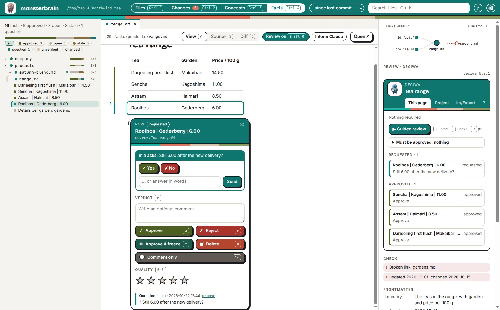

monsterbrain¶
Verfügbar für Entwicklungs-Setups – technische Details: Host-Apps.
monsterbrain ist die Desktop-App von danwos, um den Überblick über einen Wissensordner zu behalten: Dateibaum, die Datei passend zu ihrem Typ dargestellt, Links und Metadaten und eine Änderungsansicht, die zeigt, was Agenten geändert haben. deciwa ergänzt das Review:
Review an der dargestellten Datei – Markdown, HTML und die neue Seite eines Diffs bekommen dieselben Balken, dieselbe Karte und dieselben Tasten wie im Browser,
Review am Quelltext – Python-Dateien und der Quelltext von Markdown- und HTML-Dateien, Element für Element,
Review auf Daten – JSON- und YAML-Dateien als Baum, Wert für Wert,
Zustand im Baum und in der Änderungsansicht – jede Datei zeigt, wie viel davon offen, freigegeben, veraltet oder eingefroren ist und welche Fragen auf eine Antwort warten,
Feedback der aktiven Datei im rechten Bereich von monsterbrain,
die Fakten-Ansicht – jedes Fakt der Faktendateien mit seinem Zustand, einzeln freigegeben oder eine ganze Datei auf einmal (Ein Fakt ist ein Block eine... (DEC_FACT_BLOCKS)),
Fragen statt
[CHECK]-Markierungen (deciwa ersetzt die [CHECK]-... (DEC_REPLACES_CHECK)) – was die KI fragt, erscheint am Element und in der Änderungsansicht,dieselben Daten wie überall – Feedback landet in
.deciwa/im Ordner, sodassdeciwa todo, Claude und die anderen Integrationen es sehen.
deciwa kommt als monsterbrain-Erweiterung und bringt seine Engine mit – kein Python, kein Terminal (Host-Apps bekommen deciwa a... (DEC_HOST_EXTENSIONS), Die Python-Teile lassen sic... (DEC_STANDALONE_ENGINE)). Ohne die Erweiterung funktioniert monsterbrain wie bisher, nur ohne Review.
In monsterbrain¶
Review-Modus –
Shift Roder der Schalter Review on/off neben View · Source · Diff; er erscheint, wenn die Datei prüfbar ist. Dann wirken die Tasten der Review-Oberfläche auf die dargestellte Datei:a r f dfür ein Urteil,0–5für Sterne,nfür einen Kommentar,vgeführtes Review,j knächstes und vorheriges Element. Außerhalb des Review-Modus behält monsterbrain seine eigenen Tasten.Seitenpanel – der Abschnitt Review · deciwa enthält das deciwa-Panel der Datei: was offen, freigegeben oder veraltet ist, die Fragen, das ganze Projekt.
Baum und Änderungsansicht – eine Markierung je Datei:
2?offene Fragen, eine Zahl für Aufgaben für die KI,3/5freigegebene Pflichtelemente,✓alles geprüft.Diffs – die neue Seite eines dargestellten oder nebeneinander gezeigten Diffs ist prüfbar; ein freigegebener Absatz, der sich geändert hat, erscheint als veraltet.
Quelltext – Python-Dateien in der Code-Ansicht: Klassen, Funktionen, Methoden und die Anweisungen außerhalb von Funktionen (Importe, Zuweisungen,
if __name__ …) sind Elemente (Alt-Klick für die Klasse um eine Methode); eine freigegebene Funktion, die sich ändert, erscheint als veraltet. Der Tab Source einer Markdown- oder HTML-Datei funktioniert genauso, Zeile für Zeile.JSON- und YAML-Dateien – monsterbrain zeigt sie als Baum; jeder Knoten ist ein Element, vom ganzen Dokument bis zum einzelnen Wert (JSON- und YAML-Dateien werd... (DEC_DATA_ADAPTERS)). Wer einen Knoten in einem zugeklappten Teil auswählt, klappt ihn auf; neu formatieren oder Schlüssel umsortieren behält das Review, ein geänderter Wert macht ihn und die Knoten um ihn herum veraltet. Der Reiter Source funktioniert Zeile für Zeile wie bei Python.
HTML-Dateien – die dargestellte Seite ist mit denselben Elementen prüfbar wie ihr Quelltext; der Review-Schalter und
Shift Rwirken auf die Seite, der deciwa-Knopf in der Seite öffnet ihr Panel.Fakten (
Ctrl 4) – deciwa füllt die Fakten-Ansicht von monsterbrain: jeden Listenpunkt, jede Tabellenzeile und jeden freien Absatz einer Datei in20_facts/mit seiner Gruppe (approved, open, stale, question, unverified), gezählt je Ordner und Datei. Ein Klick auf ein Fakt öffnet die Datei an dieser Stelle im Review-Modus,agibt es frei;✓an einer Datei oder einem Ordner oderShift Afür die aktive Datei gibt jedes noch nicht freigegebene Fakt und die Datei als Ganzes frei. Eine Freigabe der ganzen Datei zeigt✓an der Datei und veraltet (✓!) bei jeder Änderung.Claude informieren – der Knopf neben dem Review-Schalter sagt der Claude-Sitzung des Ordners Bescheid über das Review (Agent-Aktionen von monsterbrain). Er umfasst das offene Konzept der Datei, wenn dieses Konzept – sein Ordner oder eine Datei, die es unter
results:aufführt – Review-Einträge hat, die neuer sind als die letzte Übergabe, sonst nur die Datei. Freigaben zählen mit: Claude wartet vielleicht auf eine. Claude liest die Einträge selbst (deciwa show,deciwa todo); ihrecreated-Zeiten zeigen, was neu ist. Der Knopf ist ausgegraut, solange nichts neu ist, und erst ein Klick startet ihn; die Zeit der letzten Übergabe wird nur gehalten, solange monsterbrain läuft – deciwa speichert dafür nichts.Claude-Werkzeuge – der MCP-Server von monsterbrain bekommt
deciwa_feedback(der Review-Stand einer Datei oder alle offenen Aufgaben) unddeciwa_show(eine Datei an einem Element öffnen).

Die Fakten-Ansicht in monsterbrain: Ein Klick auf ein Fakt öffnet es im Review-Modus.¶
Die Review-Daten sind das .deciwa/ des Ordners. Ein Ordner ohne zeigt im Seitenpanel Set up review (deciwa init).
Einrichten (Entwicklung)¶
Bis es die eigenständige Engine gibt, nutzt die Erweiterung die Engine eines deciwa-Checkouts:
$ cd ~/workspace/deciwa && uv sync
$ cd packages/monsterbrain && npm ci && npm run build
In monsterbrain: Einstellungen (Ctrl ,) → Extensions → Add folder … → ~/workspace/deciwa/packages/monsterbrain, dann Restart to apply. Die Erweiterung findet die Engine im .venv des Checkouts; eine andere lässt sich in der settings.json von monsterbrain setzen: {"path": "…/packages/monsterbrain", "options": {"enginePath": "/pfad/zu/deciwa"}}.